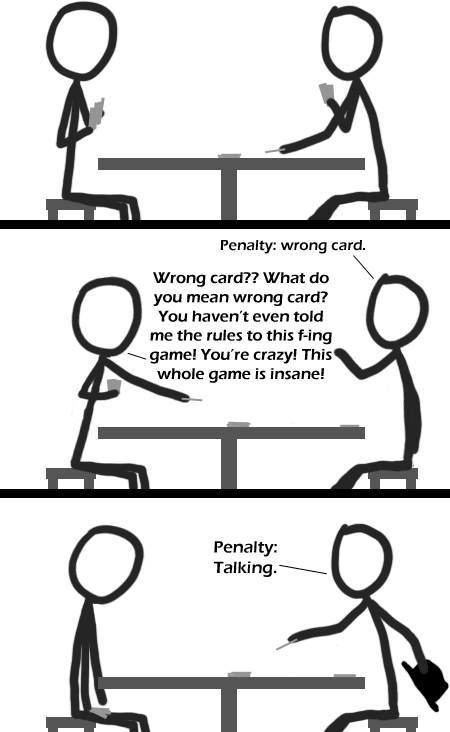

Comic JK 356
When I Feel Like It
⇤
<
?
>
⇥

⇤
<
?
>
⇥
Forum
.
RSS
.
Digg
.
Facebook
.
Reddit
.
Twitter
.
Stumbleupon
POINT OF ORDER Enter your thoughts on number 356 here. Please, no spamming, trolling, or phreaking. Darn! I lost The Game! All Hail Chairman MAO! Also Penalty: Asking the rules & Penalty: Lying That game is so fun. I used to play it on camping trips all the time. The rules are really easy, but it's still fun to watch the new kids squirm as they fail to grasp the concept of the gameplay from the more experienced players. >Same here, except I was one of the new kids for a long time. >>We all are at first. I gotta love it though when you play at camp for 2 hours/day for 3 days and then have the HEAD COUNSELOR join the game, fail for a day, and then end up winning the last game of the week! >>>See I can feel superior about myself without tearing other people down to do it. Maybe Mao isn't for me. Is that game any fun at all if everyone understands how it works? >That's when you introduce rules that allow others to introduce rules in certain circumstances. The longer a game goes on, the more rules it gets, so the harder it is. >That's when you have to make up truly ridiculous rulesets, that no human mind can consistently keep at once. >>If the card you played isn't co-prime to the card you played it on and they're of different suits, you have to cross your arms. >>>Penalty: failing to take the phase of the Moon into account. nothing is as funny as reality END POINT OF ORDER No it's not! >Penalty: Talking >>DAMMIT! >>>PENALTY: TALKING! >>>>You didn't say sorry after giving a penalty, sorry. (Is this not a common rule?) >>>>>This is too boring, I wanna run around. CALVINBALL, ANYONE? >>>>>No, not a common rule. >>>>>>I like "Huzzah" better. It often induces hilarity. why's he holding a hat? >There's a penalty for talking without holding a hat. >>It is a BLACK HAT >>>OMG, BLACK HAT GUY!!!! notice how the character on the left actually looks downcast in the final frame, despite being just a few simple lines... ___ _ _ _ _ _ _ |_ _| __ _____ | |_ ___ | |_| |__ __ _| |_ __ _| | | | | | | / / _ || __/ _ | | __| '_ | / _` | __| / _` | | | | | | V / (_) | || __/ | |_| | | | (_| | |_ | (_| | | | |___| |_/ |___/ |__|___| |__|_| |_||__,_||__| |__,_|_|_| _ __ _ _ _ _ __ ___ ___| |_ ___ / _|_ __ ___ _ __ ___ | |_| |__ (_)___ | '_ | / _ |/ __| __/ __| | |_| '__/ _ || '_ ` _ | | __| '_ || / __| | |_) | (_) |__ | |_|__ | | _| | | (_) | | | | | | | |_| | | | |__ | | .__/ |___/|___/|__|___/ |_| |_| |___/|_| |_| |_| |__|_| |_|_|___/ |_| _ _ _ _ _ __ ___ (_)_ __ | |_ ___ _ __ _ __ ___ _ _ ___| |_ | |__ ___ | '_ | / _ || | '_ || __| / _ || '_ | | '_ ` _ || | | / __| __| | '_ | / _ | | |_) | (_) | | | | | |_ | (_) | | | | | | | | | | |_| |__ | |_ | |_) | __/ | .__/ |___/|_|_| |_||__| |___/|_| |_| |_| |_| |_||__,_|___/|__| |_.__/ |___| |_| _ _ _ __ _ ___ ___(_|_) __ _ _ __| |_ / _` / __|/ __| | | / _` | '__| __| | (_| |__ | (__| | | | (_| | | | |_ |__,_|___/|___|_|_| |__,_|_| |__| ___ __ _ _ _ _ _ _ _ |_ _| / _(_)_ __ __| | | |_| |__ __ _| |_ | |_| |__ ___ | | | |_| | '_ | / _` | | __| '_ | / _` | __| | __| '_ `/ _ | | | | _| | | | | (_| | | |_| | | | (_| | |_ | |_| | | || __/ |___| |_| |_|_| |_||__,_| |__|_| |_||__,_||__| |___|_| |_||___| Darned character limit. I'd delete all this if it wasn't so darn funny. I love you. >Thank you. I <3 figlet. And I would be writing this in figlet if not for the character limit. Oh great site designer... please end the character limit. things would be some much more interesting. > Good luck with that. There always has to be some limit with everything computers do. The key is to make it a limit that can't feasibly be reached and/or won't break the system if it is reached. Reminds me of moderators in forums. We usually play with 'failure to <verb>' instead of penalty. *handing out cards* Talking, Talking, Talking, Talking, Talking, Cursing,, UNO!! Talking, *Hands card over*, sorry.